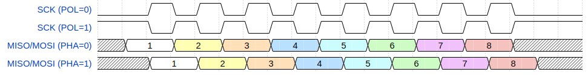

Здесь и далее под трансфером понимается передача данных из буфера fifo_tx на выход MOSI/MISO и прием данных с MISO/MOSI в буфер fifo_rx. Прием и передача происходят одновременно с использованием тактового сигнала для ведомого устройства SCK.
Выбор режима трансфера осуществляется через регистр конфигурирования CFG. Разрешение работы задается в регистре CTRL. Управление выбором ведомого устройства осуществляется через регистр TSR. Отслеживание заполнения буферов осуществляется через регистр состояния FSR.
Биты CFG.PHA и CFG.POL определяют фазу и полярность тактового сигнала при трансфере. Соотношение сигналов MOSI/MISO и SCK для режимов Controller и Target идентично.
| CFG.POL | CFG.PHA | Описание |
|---|---|---|
| 0 | 0 | В отсутствии трансфера SCK=b'0. Данные выдвигаются по падающему фронту SCK, захватываются по нарастающему фронту SCK. |
| 0 | 1 | В отсутствии трансфера SCK=b'0. Данные выдвигаются по нарастающему фронту SCK, захватываются по падающему фронту SCK. |
| 1 | 0 | В отсутствии трансфера SCK=b'1. Данные выдвигаются по нарастающему фронту SCK, захватываются по падающему фронту SCK. |
| 1 | 1 | В отсутствии трансфера SCK=b'1. Данные выдвигаются по падающему фронту SCK, захватываются по нарастающему фронту SCK. |

TSR [0x03] : Регистр управления сигналами выбора Target.
| Биты | Название | Описание | Доступ | Начальное значение |
|---|---|---|---|---|
| 7:1 | TS |
Target Select. Выбор Target устройства, связанного с данным битом регистра. Акутальное количество бит определяется параметром TS_WIDTH. В случае отсутствия бита, значение равно 0. |
R/W | 0x7F |
| 0 | TS0 |
Target Select 0. При записи аналогичен старшим битам регистра. При чтении в режиме Controller (CFG.SM=b'0) равен записанному в нему значению, в режиме Target равен значению на выводе ts0_cts_i с учетом задержки на синхронизацию. |
R/W | 1 |
Трансфер через SPI осуществляется, если в буфере передатчика находятся данные (FSR.TxEmpty=b'0), и разрешена передача (CTRL.TE=b'1). Начало трансфера сигнализируется установкой бита STAT.TIP. Когда последний байт из буфера fifo_tx переписывается в передатчик spi_controller, устанавливается бит FSR.TxEmpty. Трансфер заканчивается после передачи последнего байта, бит STAT.TIP сбрасывается.
Изменение значения CFG.PHA, CFG.POL и CFG.TBO в процессе трансфера может привести к неправильному функционированию устройства.
Трансфер может быть приостановлен сбросом CTRL.TE. Вне зависимости от момента сброса, передача текущего байта (если она была начата) будет завершена, а следующая передача не начнется до установки бита CTRL.TE.
__ __ __ __ __ __ __ __ __ __ __ __ __ __ __ __
SCK : _____| |__| |__| |__| |__| |__| |__| |__| |_____| |__| |__| |__| |__| |__| |__| |__| |______
_____ ____ _____ ___________ _____
MOSI : ____________________________________________| |___| |_____| |_____| |_____| |______
______________________ ______________________________________________________
CTRL.TE : \______________________________/
__ _____________________________________________________
FSR.TxEmpty : \___________________________________________________/
Для активации устройства в режиме Target (CFG.SM=b'1) требуется перевести вход ts0_cts_i в состояние b'0. В этот момент на выход MISO_o выставляется первый бит передаваемого пакета (в соответствии со значением CFG.TBO). Начинается опрос линии SCK_i до момента обнаружения фронта сигнала (в соответствии со значениями фазы и полярности). Опрос линии происходит через фильтр с частотой rclk путем выборки из 4 значений, поэтому частота SCK не должна превышать частоту rclk/4. После обнаружения тактового сигнала происходит установка бита STAT.TIP. Сброс бита происходит после 8-го перепада на SCK_i или после установки ts0_cts_i (в зависимости от того, что произойдет раньше). Данные сдвигаются последовательно, после сдвига последнего бита байта, происходит чтение нового байта из буфера передатчика.
Т.к. через SPI нельзя определить заполнение буфера передатчика, то контроль за этим полностью возложен на пользователя.
Перевод ts0_cts_i в состояние b'1 в процессе трансфера приводит к окончанию передачи байта. После сброса ts0_cts_i передаваться будет уже следующий байт, прочитанный из fifo_tx.